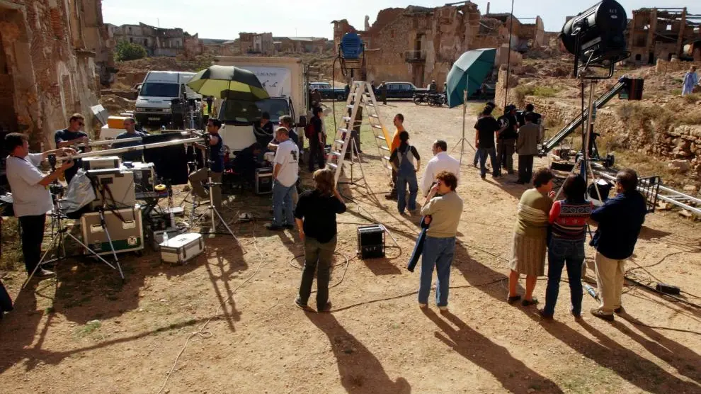

Trama y Contexto
La familia Matthews se desvía de su camino y termina en el misterioso
pueblo, del cual no pueden salir.
Mientras buscan una salida, conocen a los habitantes y descubren que
algo amenaza al pequeño poblado.
El bosque que los rodea está lleno de horribles criaturas nocturnas.
Un pueblo ficticio con historia real, la locación
El pueblo donde se desarrolla la serie es ficticio, pero este
escenario se reconstruyó cerca de la localidad Halifax de Nueva
Escocia, Canadá, el cual tiene su propia historia, ya que fue habitado
por trabajadores de una base militar cercana en la década de 1950 a
1960.
La serie se rodó en una zona que anteriormente fue residencial. Este
asentamiento, que contaba con escuelas, una iglesia y tiendas, fue
demolido en 2014. Sin embargo, muchas de las calles que quedaron tras
la demolición se han reutilizado como base para construir el pueblo
ficticio que aparece en la serie. Este hecho ha dado lugar a una
sensación de autenticidad.
Un dato curioso: la ciudad de Halifax es conocida por su vinculación
al desastre del Titanic, ya que varios cuerpos de las víctimas fueron
recuperados en el puerto y enterrados en un cementerio local.
Algunos lugares icónicos de la serie
- La mansión Colony House
- La cafetería del pueblo
- El "Árbol caído en la carretera"

Sobre los creadores de esta obra de arte
Creador
El creador de la serie es John Griffin.
Los créditos previos de Griffin como guionista incluyen un episodio de
The Twilight Zone y la película de ciencia ficción de Disney+, Crater.

Producción
El productor de la serie es Michael Mahoney.
Y como productores ejecutivos tenemos al renombrado
Jack Bender (conocido por su producción Lost), Rola
Bauer, Lindsay Dunn, Michael Wright, Nancy Cotton, Anthony and Joe
Russo, Mike Larocca, Jeff Pinkner, Josh Appelbaum, André Nemec y Scott
Rosenberg.
